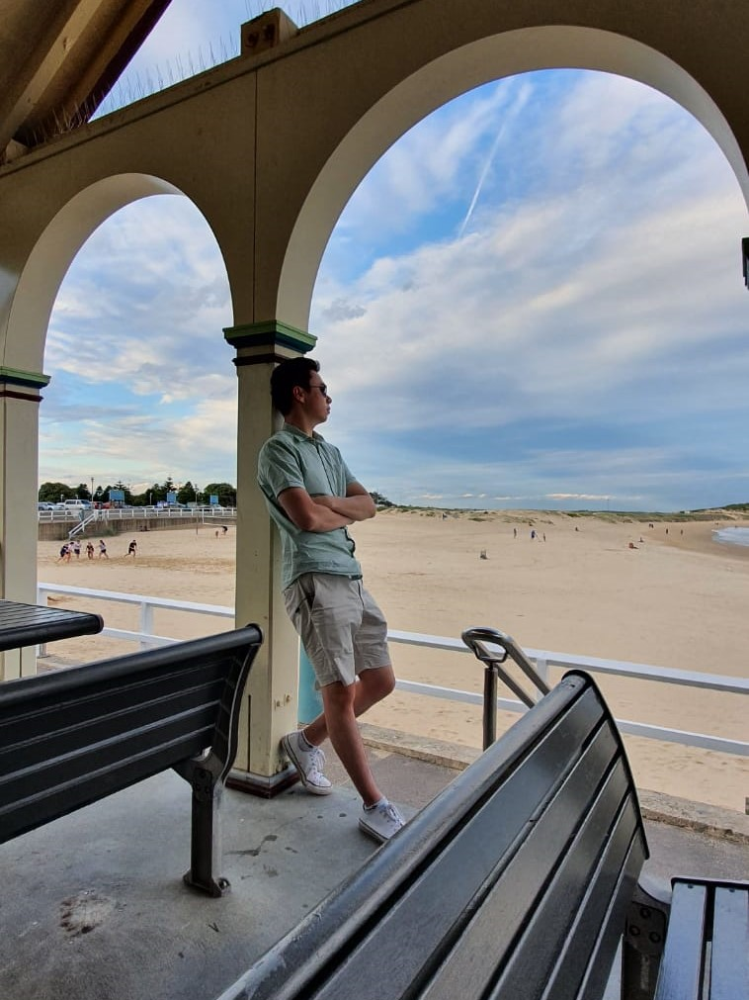

Born and raised in Sydney Australia, Jonathan studied film at SAE Institute before becoming a media freelancer. He has now returned to studying to become a full stack web developer and looks to enter the tech industry. In his spare time Jonathan enjoys watching the NBA and playing badminton and has been learning the drums. Please click the link below for his full resume